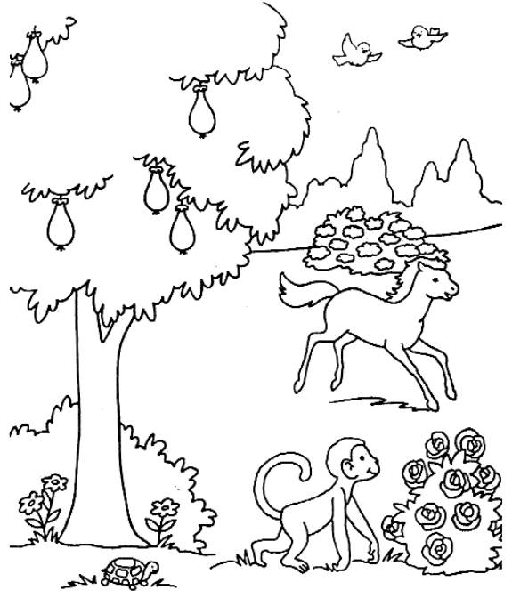

Read the lessons at the Vanderbilt Library website: http://divinity.lib.vanderbilt.edu/lectionary/cAdvent/cAdvent1.htm
Read
the lessons at the Vanderbilt Library website:
http://divinity.lib.vanderbilt.edu/lectionary/cAdvent/cAdvent1.htm
Elementary School Pew-work
Unscramble the bold words:
Then Jesus told them a sroty __________: When you see a fig tree or any other rtee __________ putting out leaves, you know that mmrsue __________ will soon come. So, when you see these things happening, you know that God's kmdgnio __________ will soon be here. You can be sure that some of the eeppol __________ of this generation will still be evial __________ when all of this takes place. The sky and the earth won't last rreevfo __________, but my words will.
What are some of the signs Jesus says to look for?
______________________________________________________________________________
What is the hopeful sign Jesus promises?
______________________________________________________________________________
Can anyone name times in our worship service we claim this promise?
______________________________________________________________________________
What "signs" is Jesus telling the people they know about here?
______________________________________________________________________________
What might help us believe "the kingdom of God is near."
______________________________________________________________________________
N R S V M G L O V E A L L
|
Word List |
